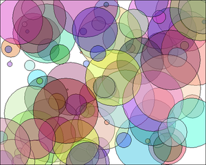

Programming with Objects
There are several ways in which object-oriented concepts can be applied to the process of designing and writing programs. The broadest of these is object-oriented analysis and design which applies an object-oriented methodology to the earliest stages of program development, during which the overall design of a program is created. Here, the idea is to identify things in the problem domain that can be modeled as objects. On another level, object-oriented programming encourages programmers to produce generalized software components that can be used in a wide variety of programming projects.
Of course, for the most part, you will experience "generalized software components" by using the standard classes that come along with Java. We begin this section by looking at some built-in classes that are used for creating objects. At the end of the section, we will get back to generalities.
Some Built-in Classes
Although the focus of object-oriented programming is generally on the design and implementation of new classes, it's important not to forget that the designers of Java have already provided a large number of reusable classes. Some of these classes are meant to be extended to produce new classes, while others can be used directly to create useful objects. A true mastery of Java requires familiarity with a large number of built-in classes—something that takes a lot of time and experience to develop. Let's take a moment to look at a few built-in classes that you might find useful.
A string can be built up from smaller pieces using the + operator, but this is not always efficient. If str is a String and ch is a character, then executing the command "str = str + ch;" involves creating a whole new string that is a copy of str, with the value of ch appended onto the end. Copying the string takes some time. Building up a long string letter by letter would require a surprising amount of processing. The class StringBuilder makes it possible to be efficient about building up a long string from a number of smaller pieces. To do this, you must make an object belonging to the StringBuilder class. For example:
StringBuilder builder = new StringBuilder();(This statement both declares the variable builder and initializes it to refer to a newly created StringBuilder object. Combining declaration with initialization was covered in Subsection 4.8.1 and works for objects just as it does for primitive types.)
Like a String, a StringBuilder contains a sequence of characters. However, it is possible to add new characters onto the end of a StringBuilder without continually making copies of the data that it already contains. If x is a value of any type and builder is the variable defined above, then the command builder.append(x) will add x, converted into a string representation, onto the end of the data that was already in the builder. This can be done more efficiently than copying the data every time something is appended. A long string can be built up in a StringBuilder using a sequence of append() commands. When the string is complete, the function builder.toString() will return a copy of the string in the builder as an ordinary value of type String. The StringBuilder class is in the standard package java.lang, so you can use its simple name without importing it.
A number of useful classes are collected in the package java.util. For example, this package contains classes for working with collections of objects. We will study such collection classes extensively in Chapter 10. And we have already encountered java.util.Scanner in Subsection 2.4.6. Another class in this package, java.util.Date, is used to represent times. When a Date object is constructed without parameters, the result represents the current date and time, so an easy way to display this information is:
System.out.println( new Date() );Of course, since it is in the package java.util, in order to use the Date class in your program, you must make it available by importing it with one of the statements "import java.util.Date;" or "import java.util.*;" at the beginning of your program. (See Subsection 4.6.3 for a discussion of packages and import.)
I will also mention the class java.util.Random. An object belonging to this class is a source of random numbers (or, more precisely pseudorandom numbers). The standard function Math.random() uses one of these objects behind the scenes to generate its random numbers. An object of type Random can generate random integers, as well as random real numbers. If randGen is created with the command:
Random randGen = new Random();and if N is a positive integer, then randGen.nextInt(N) generates a random integer in the range from 0 to N-1. For example, this makes it a little easier to roll a pair of dice. Instead of saying "die1 = (int)(6*Math.random())+1;", one can say "die1 = randGen.nextInt(6)+1;". (Since you also have to import the class java.util.Random and create the Random object, you might not agree that it is actually easier.) An object of type Random can also be used to generate so-called Gaussian distributed random real numbers.
Some of Java's standard classes are used in GUI programming. You will encounter many of them in Chapter 6. Here, I will mention only the class Color, from the package javafx.scene.paint, so that I can use it in the next example. A Color object represents a color that can be used for drawing. In Section 3.9, you encountered color constants such as Color.RED. These constants are final static member variables in the Color class, and their values are objects of type Color. It is also possible to create new color objects. Class Color has a constructor new Color(r,g,b,a), which takes four double parameters to specify the red, green, and blue components of the color, plus an "alpha" component that says how transparent the color is. The parameters must be in the range 0.0 to 1.0. For example, a value of 0.0 for r means that the color contains no red, while a value of 1.0 means that the color contains the maximum possible amount of red. When you draw with a partially transparent color, the background shows through the color to some extent. A larger value of the fourth parameter gives a color that is less transparent and more opaque.
A Color object has only a few instance methods that you are likely to use. Mainly, there are functions like getRed() to get the individual color components of the color. There are no "setter" methods to change the color components. In fact, a Color is an immutable object, meaning that all of its instance variables are final and cannot be changed after the object is created. Strings are another example of immutable objects, and we will make some of our own later in this chapter.
The main point of all this, again, is that many problems have already been solved, and the solutions are available in Java's standard classes. If you are faced with a task that looks like it should be fairly common, it might be worth looking through a Java reference to see whether someone has already written a class that you can use.
The class "Object"
We have already seen that one of the major features of object-oriented programming is the ability to create subclasses of a class. The subclass inherits all the properties or behaviors of the class, but can modify and add to what it inherits. In Section 5.5, you'll learn how to create subclasses. What you don't know yet is that every class in Java (with just one exception) is a subclass of some other class. If you create a class and don't explicitly make it a subclass of some other class, then it automatically becomes a subclass of the special class named Object, in package java.lang. (Object is the one class that is not a subclass of any other class.)
Class Object defines several instance methods that are inherited by every other class. These methods can be used with any object whatsoever. I will mention two of them here. You will encounter more of them later in the book.
The method equals(obj) is defined in class Object. It takes one parameter, which can be any object. It is meant for testing whether two objects are "equal" but its definition gives obj1.equals(obj2) the same meaning as obj1 == obj2. That is, it tests whether obj1 and obj2 refer to the same object. The String class overrides this method to say that two Strings are equal if they contain the same sequence of characters, and it is common to similarly override equals() in a class to say that two objects belonging to that class are equal if they have the same contents. We see again that what it means for objects to be "equal" is not always clear. We will have more use for this method later.
The instance method toString() in class Object returns a value of type String that is supposed to be a string representation of the object. You've already used this method implicitly, any time you've printed out an object or concatenated an object onto a string. When you use an object in a context that requires a string, the object is automatically converted to type String by calling its toString() method.
The version of toString that is defined in Object just returns the name of the class that the object belongs to, concatenated with a code number called the hash code of the object; this is not very useful. When you create a class, you can write a new toString() method for it, which will replace the inherited version. For example, we might add the following method to any of the PairOfDice classes from the previous section:
/**
* Return a String representation of a pair of dice, where die1
* and die2 are instance variables containing the numbers that are
* showing on the two dice.
*/
public String toString() {
if (die1 == die2)
return "double " + die1;
else
return die1 + " and " + die2;
}If dice refers to a PairOfDice object, then dice.toString() will return strings such as "3 and 6", "5 and 1", and "double 2", depending on the numbers showing on the dice. This method would be used automatically to convert dice to type String in a statement such as
System.out.println( "The dice came up " + dice );so this statement might output, "The dice came up 5 and 1" or "The dice came up double 2". You'll see another example of a toString() method in the next section.
Writing and Using a Class
As an example of designing and using a new class, we will write an animation program, based on the same animation framework that was used in Subsection 3.9.3. The animation shows a number of semi-transparent disks that grow in size as the animation plays. The disks have random colors and locations. When a disk gets too big, or sometimes just at random, the disk disappears and is replaced with a new disk at a random location. Here is a reduced-size screenshot from the program:

A disk in this program can be represented as an object. A disk has properties—color, location, and size—that can be instance variables in the object. As for instance methods, we need to think about what we might want to do with a disk. An obvious candidate is that we need to be able to draw it, so we can include an instance method draw(g), where g is a graphics context that will be used to do the drawing. The class can also include one or more constructors. A constructor initializes the object. It's not always clear what data should be provided as parameters to the constructor. In this case, as an example, the constructor's parameters specify the location and size for the circle, but the constructor makes up a color using random values for the red, green, and blue components. Here's the complete class:
import javafx.scene.paint.Color;
import javafx.scene.canvas.GraphicsContext;
/**
* A simple class that holds the size, color, and location of a colored disk,
* with a method for drawing the circle in a graphics context. The circle
* is drawn as a filled oval, with a black outline.
*/
public class CircleInfo {
public int radius; // The radius of the circle.
public int x,y; // The location of the center of the circle.
public Color color; // The color of the circle.
/**
* Create a CircleInfo with a given location and radius and with a
* randomly selected, semi-transparent color.
* @param centerX The x coordinate of the center.
* @param centerY The y coordinate of the center.
* @param rad The radius of the circle.
*/
public CircleInfo( int centerX, int centerY, int rad ) {
x = centerX;
y = centerY;
radius = rad;
double red = Math.random();
double green = Math.random();
double blue = Math.random();
color = new Color( red,green,blue, 0.4 );
}
/**
* Draw the disk in graphics context g, with a black outline.
*/
public void draw( GraphicsContext g ) {
g.setFill( color );
g.fillOval( x - radius, y - radius, 2*radius, 2*radius );
g.setStroke( Color.BLACK );
g.strokeOval( x - radius, y - radius, 2*radius, 2*radius );
}
}It would probably be better style to write getters and setters for the instance variables, but to keep things simple, I made the variables public.
The main program for my animation is a class GrowingCircleAnimation. The program uses 100 disks, each one represented by an object of type CircleInfo. To make that manageable, the program uses an array of objects. The array variable is an instance variable in the class:
private CircleInfo[] circleData; // holds the data for all 100 circlesNote that it is not static. GUI programming generally uses objects rather than static variables and methods. Basically, this is because we can imagine having several GrowingCircleAnimations going on at the same time, each with its own array of disks. Each animation would be represented by an object, and each object will need to have its own circleData instance variable. If circleData were static, there would only be one array and all the animations would show exactly the same thing.
The array must be created and filled with data. The array is created using new CircleInfo[100], and then 100 objects of type CircleInfo are created to fill the array. The new objects are created with random locations and sizes. In the program, this is done before drawing the first frame of the animation. Here is the code, where width and height are the size of the drawing area:
circleData = new CircleInfo[100]; // create the array
for (int i = 0; i < circleData.length; i++) { // create the objects
circleData[i] = new CircleInfo(
(int)(width*Math.random()),
(int)(height*Math.random()),
(int)(100*Math.random()) );
}In each frame, the radius of the disk is increased and the disk is drawn using the code
circleData[i].radius++;
circleData[i].draw(g);These statements look complicated, so let's unpack them. Now, circleData[i] is an element of the array circleData. That means that it is a variable of type CircleInfo. This variable refers to an object of type CircleInfo, which contains a public instance variable named radius. This means that circleData[i].radius is the full name for that variable. Since it is a variable of type int, we can use the ++ operator to increment its value. So the effect of circleData[i].radius++ is to increase the radius of the circle by one. The second line of code is similar, but in that statement, circleData[i].draw is an instance method in the CircleInfo object. The statement circleData[i].draw(g) calls that instance method with a parameter g that represents the graphics context that is being used for drawing.
The source code example GrowingCircleAnimation.java contains the full source code for the program, if you are interested. Since the program uses class CircleInfo, you will also need a copy of CircleInfo.java in order to compile and run the program.
Object-oriented Analysis and Design
Every programmer builds up a stock of techniques and expertise expressed as snippets of code that can be reused in new programs using the tried-and-true method of cut-and-paste: The old code is physically copied into the new program and then edited to customize it as necessary. The problem is that the editing is error-prone and time-consuming, and the whole enterprise is dependent on the programmer's ability to pull out that particular piece of code from last year's project that looks like it might be made to fit. (On the level of a corporation that wants to save money by not reinventing the wheel for each new project, just keeping track of all the old wheels becomes a major task.)
Well-designed classes are software components that can be reused without editing. A well-designed class is not carefully crafted to do a particular job in a particular program. Instead, it is crafted to model some particular type of object or a single coherent concept. Since objects and concepts can recur in many problems, a well-designed class is likely to be reusable without modification in a variety of projects.
Furthermore, in an object-oriented programming language, it is possible to make subclasses of an existing class. This makes classes even more reusable. If a class needs to be customized, a subclass can be created, and additions or modifications can be made in the subclass without making any changes to the original class. This can be done even if the programmer doesn't have access to the source code of the class and doesn't know any details of its internal, hidden implementation.
The PairOfDice class in the previous section is already an example of a generalized software component, although one that could certainly be improved. The class represents a single, coherent concept, "a pair of dice." The instance variables hold the data relevant to the state of the dice, that is, the number showing on each of the dice. The instance method represents the behavior of a pair of dice, that is, the ability to be rolled. This class would be reusable in many different programming projects.
On the other hand, the Student class from the previous section is not very reusable. It seems to be crafted to represent students in a particular course where the grade will be based on three tests. If there are more tests or quizzes or papers, it's useless. If there are two people in the class who have the same name, we are in trouble (one reason why numerical student ID's are often used). Admittedly, it's much more difficult to develop a general-purpose student class than a general-purpose pair-of-dice class. But this particular Student class is good only as an example in a programming textbook.
A large programming project goes through a number of stages, starting with specification of the problem to be solved, followed by analysis of the problem and design of a program to solve it. Then comes coding, in which the program's design is expressed in some actual programming language. This is followed by testing and debugging of the program. After that comes a long period of maintenance, which means fixing any new problems that are found in the program and modifying it to adapt it to changing requirements. Together, these stages form what is called the software life cycle. (In the real world, the ideal of consecutive stages is seldom if ever achieved. During the analysis stage, it might turn out that the specifications are incomplete or inconsistent. A problem found during testing requires at least a brief return to the coding stage. If the problem is serious enough, it might even require a new design. Maintenance usually involves redoing some of the work from previous stages....)
Large, complex programming projects are only likely to succeed if a careful, systematic approach is adopted during all stages of the software life cycle. The systematic approach to programming, using accepted principles of good design, is called software engineering. The software engineer tries to efficiently construct programs that verifiably meet their specifications and that are easy to modify if necessary. There is a wide range of "methodologies" that can be applied to help in the systematic design of programs. (Most of these methodologies seem to involve drawing little boxes to represent program components, with labeled arrows to represent relationships among the boxes.)
We have been discussing object orientation in programming languages, which is relevant to the coding stage of program development. But there are also object-oriented methodologies for analysis and design. The question in this stage of the software life cycle is, How can one discover or invent the overall structure of a program? As an example of a rather simple object-oriented approach to analysis and design, consider this advice: Write down a description of the problem. Underline all the nouns in that description. The nouns should be considered as candidates for becoming classes or objects in the program design. Similarly, underline all the verbs. These are candidates for methods. This is your starting point. Further analysis might uncover the need for more classes and methods, and it might reveal that subclassing can be used to take advantage of similarities among classes.
This is perhaps a bit simple-minded. (This is not a software engineering textbook.) But the idea is clear and the general approach can be effective: Analyze the problem to discover the concepts that are involved, and create classes to represent those concepts. The design should arise from the problem itself, and you should end up with a program whose structure reflects the structure of the problem in a natural way.